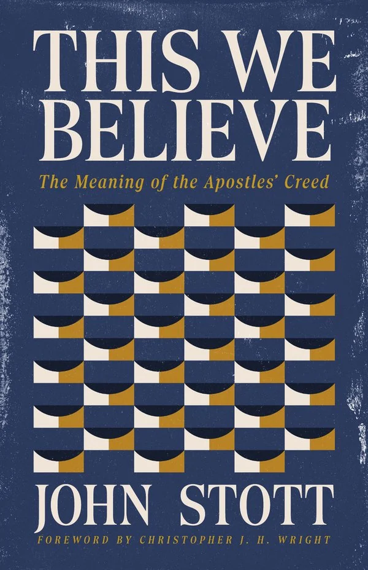

This We Believe
John Stott
Stott's sermons on the Apostles' Creed, preached at his London church and taken phrase by phrase alongside Scripture. They have not been in print before, and the volume adds a foreword by Christopher Wright and an eight-session study guide.
January 26, 2027IVP